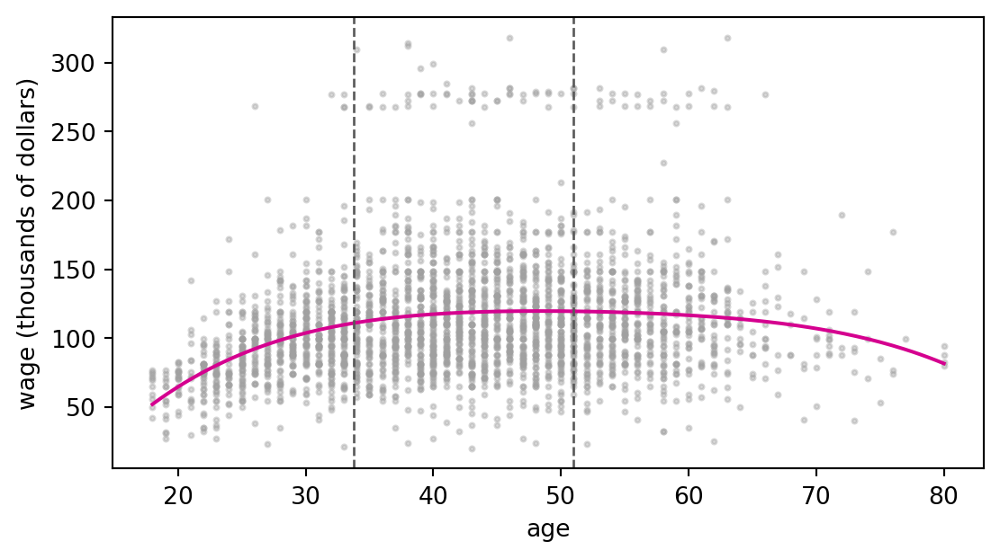

Application exercise 13: Polynomials, splines, and GAMs
STA 363
Wage has wage and demographic data for 3,000 male workers in the Mid-Atlantic region. Plotted against age, wage rises, levels off, and falls again, a shape that a straight line cannot follow. Each method below builds new columns from age and hands them to least squares.
z 4.5291
z^2 -5.7352
z^3 2.1135
z^4 -0.5683
dtype: float64
StandardScaler replaced age with \(z = (\text{age} - 42.41) / 11.54\), so the polynomial is in \(z\). The 25th and 75th percentiles of age, on both scales:
a, b = X_age["age"].quantile([0.25, 0.75])scaler = poly4[0]z_a, z_b = (np.array([a, b]) - scaler.mean_[0]) / scaler.scale_[0]float(a), float(b), round(float(z_a), 4), round(float(z_b), 4)
(33.75, 51.0, -0.7508, 0.7439)
grid = pd.DataFrame({"age": np.linspace(18, 80, 200)})fig, ax = plt.subplots(figsize=(6.5, 3.4))ax.scatter(Wage["age"], y, s=4, color="#a0a0a0", alpha=0.4)ax.plot(grid["age"], poly4.predict(grid), color="#d5008f")for v in (a, b): ax.axvline(v, color="#595959", ls="--", lw=1)ax.set_xlabel("age")ax.set_ylabel("wage (thousands of dollars)")plt.show()

Write out \(\hat{f}(z_b) - \hat{f}(z_a)\) using the four coefficients and the two values of \(z\) above, with the numbers plugged in.
Complete the code below to compute it, and check it against the difference of poly4.predict at ages 33.75 and 51. How much more, in thousands of dollars, does the model predict for a 51 year old than for a 33.75 year old?
The intercept does not appear in your answer to question 1. Why not?
Which of the four terms contributes the most to the change? Does that coefficient, on its own, tell you how wage depends on age?
The scaler is there for numerical reasons. Raw powers of age run up to \(80^4\), about 41 million, and are close to collinear. Refit poly4 with StandardScaler() removed and compare the training MSE of the two fits. They are the same polynomial, so any difference comes from the solver losing precision on nearly collinear columns.
Part 2: Step functions
step_basis cuts age at the cutpoints given and returns one 0/1 column per bin, leaving out the first bin so the intercept stands in for it.
What does each set of cutpoints predict for a 25 year old? Moving a cutpoint from 35 to 30 changed that prediction. Why does a cutpoint change the prediction for someone ten years away from it?
With cutpoints at 35 and 65, compare the 34 and 36 year olds, then the 36 and 64 year olds. What does a step function assume about how wage changes within a bin?
The second chunk prints the intercept, the two coefficients, and the mean wage in each of the three bins. Say what the intercept is, and what each coefficient is, in terms of those means.
Part 3: A linear spline by hand
Eight values of \(x\), and an outcome \(y\) measured at each. A linear spline with knots at \(\xi_1 = 35\) and \(\xi_2 = 65\) uses the basis functions \(b_1(x) = x\), \(b_2(x) = (x - 35)_+\) and \(b_3(x) = (x - 65)_+\).
\(x\)
\(b_1(x)\)
\(b_2(x)\)
\(b_3(x)\)
4
15
25
37
49
66
70
80
On paper, fill in the three basis columns.
Write out the model you would fit to estimate \(y\) with this linear spline.
Complete the code below to build the same columns and fit the model, and check your table against B.
Use these estimates to compute \(\hat{y}\) at each of the eight values of \(x\), then sketch \(\hat{y}\) against \(x\).
What is the slope of the fit left of 35, between 35 and 65, and right of 65? Read each one off the coefficients without using your sketch.
Nothing in the code says the fit has to be continuous at 35. Why is there no jump there?
Part 4: A cubic spline by hand
A cubic spline with the same two knots uses \(b_1(x) = x\), \(b_2(x) = x^2\), \(b_3(x) = x^3\), \(b_4(x) = (x - 35)^3_+\) and \(b_5(x) = (x - 65)^3_+\).
Compute \(b_4(x)\) and \(b_5(x)\) by hand for the eight values of \(x\) in Part 3. Most of them are zero.
Write out the model you would fit with this cubic spline. How many coefficients does it estimate, and how does that match \(K + 4\)?
SplineTransformer builds a cubic spline from B-splines instead. Given the same interior knots, and the range of the data as its boundary knots, it fits the same model with different columns.
The two fits in the table use different columns. Why are their fitted values identical?
Roughly what does the cubic spline predict at \(x = -100\) and at \(x = 100\)? Which part of the fitted curve is being carried out that far?
extrapolation="linear" changes how the fit is drawn past 4 and 80 and leaves the fit inside the data alone. A natural cubic spline makes linearity past the boundary knots part of the fit. How many degrees of freedom does that save here, and what could they be spent on?
Part 5: A GAM for Wage
A generalized additive model gives each predictor its own function and adds them up. Built from splines and dummy variables, it is one least squares fit on a wide design matrix. year and age are converted to floats, since PartialDependenceDisplay refuses integer columns.
The GAM and the linear model use the same three predictors. What is the only difference between them, and how much does it lower the CV MSE?
Read the age panel. Holding year and education fixed, describe how predicted wage changes with age, and compare its shape to the polynomial in Part 1.
ISLP suggests the rise in the year panel may be inflation. Does that panel look close enough to a straight line that a single linear term would do? Describe how you would check with cross-validation.
The age curve has the same shape at every level of education. Describe a pattern in wages that this model cannot represent.
Polynomials, step functions, and splines are all basis expansions: new columns built from an old one and fit by least squares. A GAM stacks one expansion per predictor.
If you finish early
The GAM above fixed n_knots for age at 4. Tune it with GridSearchCV over the values 2 to 10, using the parameter name "columntransformer__age__n_knots".
Which value does cross-validation choose, and how much does the CV MSE move across the range? ISLP suggests fixing the degrees of freedom at about four for every term in a GAM instead of tuning each one. Does your result support that?
Data from James, G., Witten, D., Hastie, T., Tibshirani, R., and Taylor, J. (2023). An Introduction to Statistical Learning with Applications in Python. Springer.